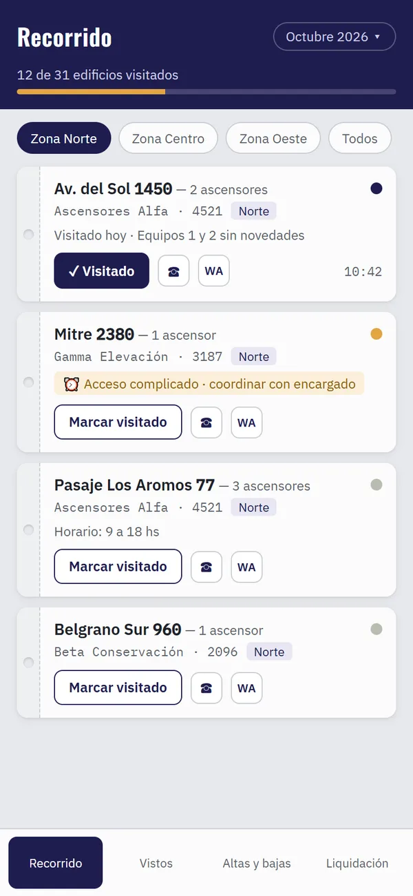
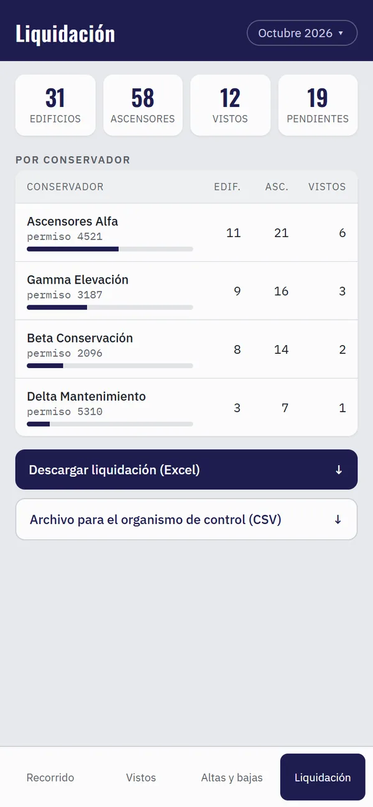

Aplicación de gestión (PWA) · 2026 · Producto para la empresa
Inspecciones técnicas en campo
En uso diarioLa estoy desarrollando en la empresa de ascensores donde soy representante técnico, para que la use y la incorpore como herramienta propia. No muestro datos de edificios ni de clientes, por privacidad operativa.
El problemaYo anotaba cada inspección mensual en papel y después pasaba todo a una planilla. Demoras, errores de transcripción y ninguna trazabilidad de qué se había revisado y cuándo.
Qué construíUna app que uso desde el celular en el lugar: recorrido por zonas, ficha por equipo con su número de registro, checklist e informe del mes que se arrastra al siguiente, foto y resultado. Funciona entera sin conexión y sincroniza al volver la señal. Genera la liquidación mensual en Excel con el formato que ya usaba y un archivo listo para cargar en el organismo de control. Ahora la estoy llevando a un sistema con cuentas por persona y roles —técnico, mantenedor, administración— para que la empresa la adopte de punta a punta.


Pantallas de ejemplo con datos ficticios, reproducidas del diseño de la app.
Probala vos. Recorré edificios de ejemplo, marcá visitas y descargá la liquidación. Datos ficticios; lo que hagas queda solo en tu navegador.
Demo en preparaciónDecisiones de diseño
- La base vive en el celular y la nube es un espejo: la app no depende de la señal, que en un subsuelo no hay.
- Las reglas del negocio están aisladas y probadas (60+ tests), para poder cambiar la pantalla sin romper la liquidación.
- Copias de seguridad automáticas antes de cada operación destructiva y un día de uso real en campo antes de pasar a producción.
- Cada persona ve solo su cartera: el aislamiento entre cuentas se probó con cuentas de prueba, 10 de 10 chequeos.